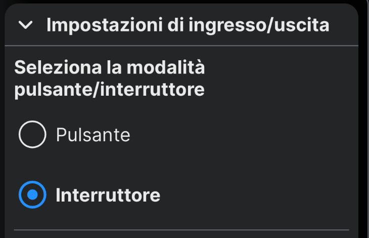
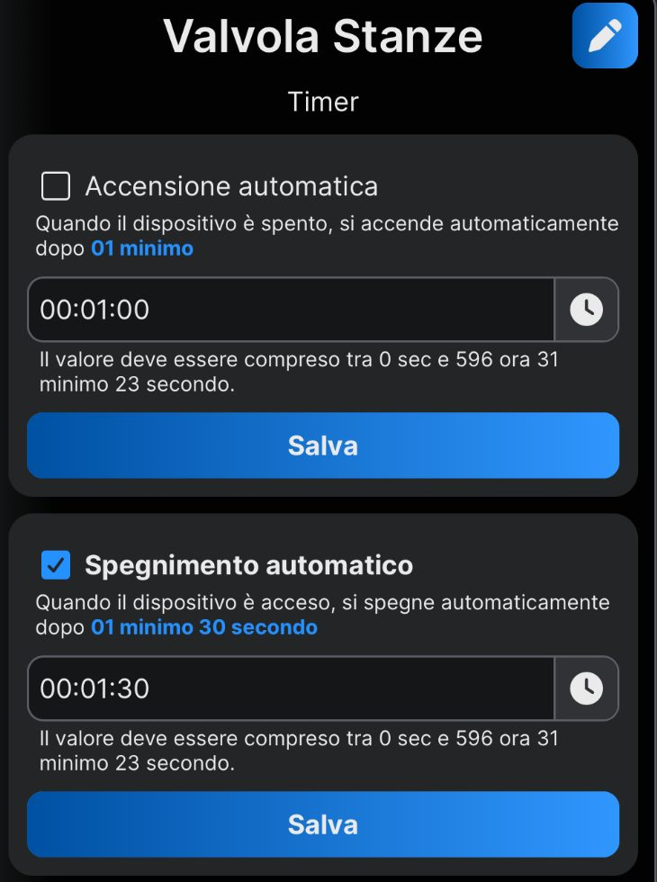
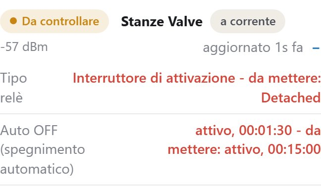

Shelly Plus 1 o 1 Gen3 per le valvole di zona
Collegamento, impostazioni nell'app Shelly e configurazione in LocalHome, per le due zone: Stanze e Bagni. Uno Shelly Plus 1 per zona; le valvole di zona sono normalmente chiuse (alimentate = aperte).
Perché: il comando a tempo
Uno Shelly mantiene l'ultimo comando ricevuto, anche quando chi l'ha dato non c'è più. Se la scheda LocalHome si spegnesse con una valvola aperta, senza precauzioni la valvola resterebbe aperta per ore o giorni: d'inverno la zona continuerebbe a scaldare, d'estate nei bagni i pannelli a soffitto farebbero condensa.
Per questo LocalHome non dice mai allo Shelly "accendi", ma "accendi per 15 minuti", e finché la valvola deve restare aperta ripete il comando ogni 5 minuti. Ogni ripetizione fa ripartire i 15 minuti da capo senza che il relè si stacchi: la valvola non si accorge di niente (provato su uno Shelly Plus 1 vero). Se i comandi smettono di arrivare, lo Shelly la chiude da solo.
| Cosa succede | La valvola | Cosa vedi in LocalHome |
|---|---|---|
| Tutto normale | Resta aperta finché serve; LocalHome la chiude quando non serve più. | - |
| Si perde qualche comando (Wi-Fi debole) | Niente: ne arriva uno ogni 5 minuti, ne basta uno ogni 15. | - |
| LocalHome o la scheda si riavviano, per meno di 15 minuti (un aggiornamento) | Niente: appena riparte, LocalHome chiede allo Shelly com'è e rinnova il comando prima che scadano i 15 minuti. | - |
| La scheda si spegne, si blocca o resta senza rete per più di 15 minuti | Lo Shelly la chiude da solo entro 15 minuti dall'ultimo comando. Quando la scheda torna, LocalHome chiede allo Shelly com'è e la riapre se serve. | In Stato sistema, per 72 ore, nel riquadro Successo nelle ultime 72 ore: è scattato il timer di sicurezza dello Shelly, con l'ora. Resta anche nello Storico watchdog. |
| Lo Shelly resta senza corrente, anche solo per pochi secondi | Si chiude: senza corrente il relè è aperto. Quando la corrente torna, lo Shelly riparte spento; LocalHome se ne accorge appena si ricollega e la riapre se serve, in pochi secondi. | Dopo circa un minuto e mezzo la valvola risulta non risponde: prima LocalHome non può saperlo, lo Shelly senza corrente non avvisa. Nei dati dello Shelly (Dispositivi) un riavvio in più. |
| Manca la corrente in tutta la casa e poi torna | Lo Shelly riparte con la valvola chiusa, poi decide LocalHome - impostazione stato all'accensione: spento. | - |
| Lo Shelly si riavvia (un aggiornamento, un guasto) con la valvola aperta | Dimentica il comando a tempo, ma lo spegnimento automatico a 15 minuti la chiude comunque se LocalHome non la riconferma. LocalHome gli chiede com'è appena si ricollega. | Nei dati dello Shelly (Dispositivi) un riavvio in più. |
| Un filo o un disturbo sul morsetto SW | Non la muove - impostazione tipo relè: Detached. | - |
Provati il 4 ottobre 2026 con uno Shelly Plus 1 vero sulla scheda di produzione: riavvii di LocalHome (anche a 44 secondi dalla scadenza dei 15 minuti), LocalHome fermo 17 minuti, scheda ferma con il server MQTT spento, riavvio del server MQTT, riavvio dello Shelly, Shelly senza corrente per 3 minuti e per 5 secondi, scheda staccata dalla corrente per 17 minuti e riaccesa, corrente tolta a tutti e due e ridata (prima lo Shelly, poi la scheda).
Le impostazioni della sezione 4 servono a questo; il resto lo fa LocalHome.
1. Collegamento
Il relè dello Shelly Plus 1 è un contatto pulito tra i morsetti I e O: la fase da dare alla
valvola di zona gli arriva con un ponte da L.
| Morsetto | Cosa ci va |
|---|---|
| N | Neutro dell'impianto. |
| L | Fase dell'impianto. |
| I | Un ponte (uno spezzone di filo) da L. |
| O | La fase della valvola di zona. Se la zona ha più valvole, vanno in parallelo su O. |
| Neutro della valvola | Non nello Shelly: direttamente al neutro dell'impianto (anche allo stesso morsetto del neutro dello Shelly). |
| SW | Libero. |
2. App Shelly: prima accensione
- Aggiungi lo Shelly dall'app sulla rete Wi-Fi principale di casa (non quella ospiti).
- Chiamalo Valvola Stanze o Valvola Bagni.
- Aggiorna il firmware (Impostazioni → Firmware).
- Annota l'ID del dispositivo (Impostazioni → Informazioni dispositivo), per esempio
shellyplus1-c0ffee000001: serve in LocalHome.
3. App Shelly: MQTT
Impostazioni → MQTT:
| Impostazione | Valore |
|---|---|
| Abilita MQTT | attivo |
| Server | <nome-scheda>.local:1883, per esempio antonio.local:1883 |
| Client ID e prefisso | quelli proposti; se cambi il prefisso (per esempio
valvola-stanze), in LocalHome scrivi quello al posto dell'ID |
| Generic status update over MQTT | attivo |
| RPC over MQTT | attivo |
| SSL, utente, password | spenti / vuoti |
L'indirizzo esatto lo trovi in LocalHome: admin → Dispositivi, sotto il link a questa guida.
4. App Shelly: ingresso/uscita e timer
Impostazioni → Impostazioni di ingresso/uscita:

Pulsante o Interruttore: indifferente. Riguarda solo cosa è collegato a SW, che è libero; la valvola
la alimenta il relè.

| Impostazione | Scegli | Perché |
|---|---|---|
| Imposta tipo relè | "Detached": l'interruttore è separato dai relè | La valvola la comanda solo LocalHome. "Interruttore di attivazione" è un'altra cosa. |
| Stato del relè all'accensione | "…per spegnersi quando è alimentato" | Vale solo quando lo Shelly riceve corrente, per esempio dopo un blackout: parte con la valvola chiusa, poi decide LocalHome. |
Timer (l'icona dell'orologio):

| Impostazione | Scegli |
|---|---|
| Accensione automatica | spenta |
| Spegnimento automatico | attivo, 00:15:00 (15 minuti), poi Salva |
Perché proprio queste tre impostazioni: vedi Perché: il comando a tempo, all'inizio.
5. In LocalHome: ti dice lui cosa manca
- Apri l'admin (in fondo alla home, Amministrazione) e vai in Zone.
- Nella scheda della zona, Fonte valvola: Shelly (dispositivo reale), poi incolla l'ID in ID dispositivo valvola.
- Esci dal campo. LocalHome interroga subito lo Shelly, senza salvare né riavviare niente, e sotto il campo scrive cosa ha trovato e ogni impostazione da correggere, com'è adesso e cosa mettere:

- Correggi nell'app Shelly e premi Riprova, finché dice Trovato: Plus1, firmware … Impostazioni a posto ✓. Se dice Non risponde, controlla l'ID e le impostazioni MQTT (sezione 3).
- Salva mappatura e riavvia LocalHome dal pulsante che compare in alto.
- In Dispositivi la riga della valvola deve essere OK.
Il controllo continua anche dopo. Se un'impostazione dello Shelly cambia, per esempio dopo un aggiornamento del firmware o un reset, in Dispositivi la sua riga diventa Da controllare e dice quale impostazione, com'è e cosa mettere; lo stesso avviso compare in Stato sistema. Appena la correggi nell'app, l'avviso sparisce da solo entro qualche minuto.

6. Prova
- Admin → Modalità diagnosi → spunta Modalità diagnosi attiva.
- Apri la valvola della zona: clic del relè, e dopo qualche minuto la valvola apre. Chiudi: altro clic.
- Togli la spunta: il termostato riprende il controllo.
Deumidificatore e valvola di bypass bagni
Deumidificatore: stesso collegamento e stesse impostazioni delle valvole di zona.
Valvola di bypass bagni: è normalmente aperta - senza corrente è aperta; d'estate LocalHome la chiude chiudendo il contatto dello Shelly, d'inverno la lascia aperta. Se la scheda si ferma deve restare com'è: d'estate chiusa, d'inverno aperta. Per questo niente comando a tempo, e nello Shelly:
| Impostazione | Scegli |
|---|---|
| Collegamento | come le valvole di zona |
| Imposta tipo relè | "Detached" |
| Stato del relè all'accensione | "…per ripristinare l'ultima modalità in cui si trovava" |
| Timer: accensione e spegnimento automatico | entrambi spenti |
Anche per il bypass LocalHome controlla queste impostazioni e dice cosa manca.